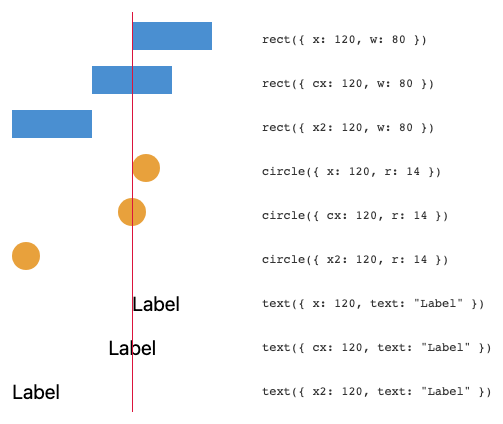
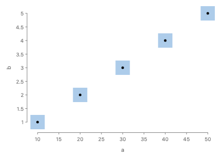
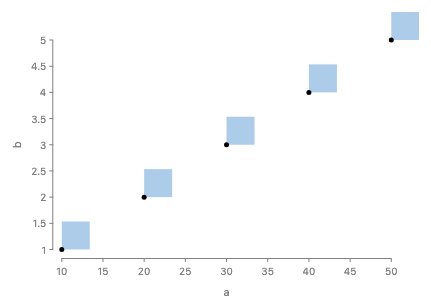
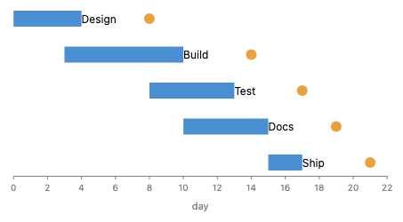
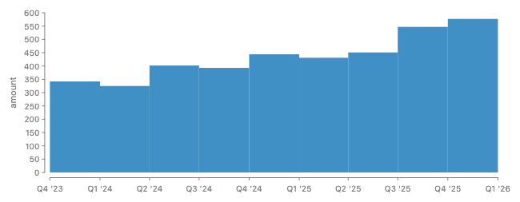

x means
PR #1378 renames scatter's xMin/xMax
to x/x2. That made one thing visible: in
scatter, a bare x is the center of a mark, and
on a mark it is the start edge. This page proposes one rule for both.
x is the
start edge, cx is the
center, x2 is the
end edge, and w is the size. The
same holds for y, cy, y2,
h. Marks already work this way.
scatter reads the same three keys as a mark.
A point is scatter({ cx, cy }). A span is
scatter({ x, x2 }), as in #1378. A bare x no
longer changes meaning when x2 appears.
start, center,
end.
You approved this today. It replaces min/max
in the dims object and "middle" in alignment.
The flat keys are short forms of it: x is
dims.x.start, cx is
dims.x.center, x2 is dims.x.end.
"Start" is where the axis starts, so x is the left edge on a
left-to-right axis and y is the top edge where y reads
top-down and the bottom edge where it reads upward. Every picture below is
a real GoFish render at the #1378 head.

The red line is at 120. x puts the start edge on it and
cx puts the center on it, for a rect, a circle and a text
alike. A circle's x is its left edge, not its center.
The x2 rows are a bug today: a lone x2 is
ignored and the mark draws at 0, with no error. This is issue #1178 ("a
lone x2/y2 is silently ignored"). Under the rule the mark ends at 120.
rect({ x: 120, w: 80 }); // start edge at 120
rect({ cx: 120, w: 80 }); // center at 120
rect({ x2: 120, w: 80 }); // end edge at 120
circle({ cx: 120, r: 14 });
text({ x: 120, text: "Label" });rect(x=120, w=80)
rect(cx=120, w=80)
rect(x2=120, w=80)
circle(cx=120, r=14)
text(text="Label", x=120)scatter({ cx, cy })
Each square is centered on its data point (the black dot). Today that is
what a bare x means inside scatter. Under the
rule it is spelled cx, the same word a mark uses for the
same thing.
chart(points, { w: 360, h: 240 })
.flow(scatter({ cx: "a", cy: "b" }))
.mark(rect({ w: 28, h: 28 }))
.render(container);chart(points, w=360, h=240).flow(
scatter(cx="a", cy="b")
).mark(rect(w=28, h=28))chart(points, { w: 360, h: 240 })
.flow(scatter({ x: "a", y: "b" }))
.mark(rect({ w: 28, h: 28 }))
.render(container);chart(points, w=360, h=240).flow(
scatter(x="a", y="b")
).mark(rect(w=28, h=28))scatter({ x: "a", y: "b" }) draws
afterwards

My pick: it draws this. The start edges sit on the
data points, because x is the start edge everywhere.
Today this picture can only be made with a mark's own
x inside group. In scatter, a
lone dims: { x: { min: "a" } } throws "a span needs both
ends", so scatter cannot place a child by its edge at
all.
The cost is real. Every other charting library writes a scatterplot
with x and y, so a newcomer who writes
scatter({ x, y }) gets marks shifted by half their size,
with no error. With 5 px dots that shift is easy to miss.
The alternative: scatter keeps x as the
center.
Then x stays the center when alone and the start edge
when x2 is given, which is the switch #1378 has now. The
scatterplot keeps its familiar spelling, and the two meanings of
x stay. I would change my pick if the familiar
scatter(x=, y=) matters more to you for the Python
audience than one rule does.
Where the familiar spelling can live. The core
already splits what a grammar of graphics calls y: a
bar's length is h, not y. Splitting
x into an edge and a center is the same kind of step. The
familiar x and y can sit one level up, in a
chart template, where x already names an axis and not an
edge: in barChart(seafood, { x: "lake", h: "count" }) it
fills spread({ by: "lake", dir: "x" }). A scatter
template's x would fill scatter({ cx }) the
same way.
// template level (unsigned, from the chart templates proposal)
scatterChart(cars, { x: "wt", y: "mpg" });
// core level, mixing the operator with a template
chart(cities)
.flow(scatter({ by: "city", cx: "lon", cy: "lat" }))
.mark(pieChart({ value: "share" })); // pie centered on its city
chart(cities)
.flow(scatter({ by: "city", cx: "lon", y: "lat" }))
.mark(barChart({ x: "year", h: "sales" })); // bars standing on the point
The last call is not possible today. It centers each small bar chart
across and puts its start edge on the point along y, so the bars stand
on their city. A bare value in scatter can only center
both ways. These three listings are sketches of syntax and were not
run.

Three layers use three different anchors. The bar spans
start to end. The dot is centered on
due. The label starts where the bar ends. Under the rule,
each layer is a scatter and each anchor is one key.
chart(tasks, { w: 420, h: 180 })
.flow(
scatter({ by: "task", x: "start", x2: "end", cy: "row" })
)
.mark(rect({ h: 18 }))
.layer(
chart(tasks)
.flow(scatter({ by: "task", cx: "due", cy: "row" }))
.mark(circle({ r: 6 }))
)
.layer(
chart(tasks)
.flow(scatter({ by: "task", x: "end", cy: "row" }))
.mark(text({ text: "task" }))
)
.render(container);chart(tasks, { w: 420, h: 180 })
.flow(
scatter({ by: "task", x: "start", x2: "end", y: "row" })
)
.mark(rect({ h: 18 }))
.layer(
chart(tasks)
.flow(scatter({ by: "task", x: "due", y: "row" }))
.mark(circle({ r: 6 }))
)
.layer(
chart(tasks)
.flow(group({ by: "task" }))
.mark(text({ x: "end", cy: "row", text: "task" }))
)
.render(container);
Today's version shows the problem three ways. In the first
scatter, x is a start edge and
y is a center, in the same call. In the second,
x is a center. The label cannot be a
scatter at all, so it switches to group and a
mark's own x and cy. Fills and axis options
are left out of both listings.
chart(tasks, w=420, h=180).flow(
scatter(by="task", x="start", x2="end", cy="row")
).mark(rect(h=18)).layer(
chart(tasks).flow(scatter(by="task", cx="due", cy="row")).mark(circle(r=6))
).layer(
chart(tasks).flow(scatter(by="task", x="end", cy="row")).mark(text(text="task"))
)
x and x2 are the two ends of a span, on
scatter as on rect. This is the existing
QuarterlyBars story, unchanged.
scatter({ by: "start", x: "start", x2: "end" });start, center, end
The two word sets are exact synonyms today. One table in the layout code
maps start to min, middle to
center and end to max. With one
set, the long form and the alignment keywords read the same.
rect({ dims: { theta: { start: 0, end: 90 } } });
circle({ dims: { r: { center: 40 } } });
spread({ dir: "x", alignment: "center" }, [a, b]);
Place.along({ at: "x-end" });rect({ dims: { theta: { min: 0, max: 90 } } });
circle({ dims: { r: { center: 40 } } });
spread({ dir: "x", alignment: "middle" }, [a, b]);
Place.along({ at: "x-max" });The full list of spellings that change is under "What changes".
#1375 adds ribbon({ x, h }) and
line({ x, y }), where x is the position of
each row's vertex or cross-section. A vertex has no width, so its start,
center and end are the same place and a bare x is right.
Nothing in that PR changes.
The rule also says what the thickness axis means, as for a rect of zero
width. h alone runs from the baseline. A band between two
columns would be y and y2, and a band centered
on a column would be cy and h. #1375 has only
the first of these today.
ribbon({ x: "date", h: "count" }); // in #1375
ribbon({ x: "date", y: "low", y2: "high" }); // what the rule implies
ribbon({ x: "date", cy: "mean", h: "spread" }); // what the rule implies
One seam shows: a line with dots on it is
line({ x, y }) under scatter({ cx, cy }), two
keys for the same data position. The same seam exists today between
line({ x, y }) and a mark-level
circle({ cx, cy }). It separates things with a size from
points.
One word changes: Baseline.middle() becomes
Baseline.center(). Baseline.start() and
Baseline.end() already fit.
#1378's x/x2 span is the rule's spelling, so
that part stands. Both open questions in its description go away under
the rule:
"A bare x and { center } cannot be told
apart."
They no longer share a slot. A bare x is the start and
cx is the center, so { center, end } is a real
center and a real end, as it already is on a rect.
"The two ends infer differently." Only
scatter's x accepts a category today, because
it doubles as the point. With scatter on the marks' table,
the three keys are one kind of channel.
I would add the cx/cy change to #1378 before
it merges, so the switching rule and its docs never ship. The vocabulary
rename is larger and independent, and I would do it as its own PR.
Nothing is implemented yet. I am waiting for your word on the fork in
example 2.
Marks lay out alike. The API design page already
settles that a mark's y is the edge of its box, for text as
for a rect (#681, where text y was briefly the baseline and
labels moved onto dots). So "is x the center or the edge"
is decided for marks. scatter is the exception.
No rule a user has to model. "x is the
center unless x2 is present" is a conditional inside the
engine. The user cannot see it in their code or write the other case.
One table instead of two. The code has a mark table (bare value is the start) and a scatter table (bare value is the center, rewritten to the start when an end is present). Under the rule the scatter table is deleted.
It adds reach. scatter can then place a
child by its start or end edge, which it cannot do today. Example 3's
label needs that.
Flat keys stay as short forms. x,
cx, x2 were approved as the top-level keys in
#838, and the nested dims object is the long form. No story
or docs page uses dims with center,
min or max today. People write the short keys.
Every spelling you listed, written out on the three lines of the Gantt example (the bar, the milestone, the label) and on a plain rect. The pictures do not change, only the words.
x / cx / x2 (proposed)scatter({ by: "task", x: "start", x2: "end", cy: "row" });
scatter({ by: "task", cx: "due", cy: "row" });
scatter({ by: "task", x: "end", cy: "row" });
rect({ x: 0, y: 0, w: 90, h: 40 });scatter(by="task", x="start", x2="end", cy="row")
scatter(by="task", cx="due", cy="row")
rect(x=0, y=0, w=90, h=40)
Short, and already what marks use. Vega's rect takes exactly this set
(x, xc, x2, width),
and SVG uses the same letters. The weak point is that
x2 does not say "end" and the two affixes do not match each
other.
xStart / xCenter / xEndscatter({ by: "task", xStart: "start", xEnd: "end", yCenter: "row" });
scatter({ by: "task", xCenter: "due", yCenter: "row" });
scatter({ by: "task", xStart: "end", yCenter: "row" });
rect({ xStart: 0, yStart: 0, w: 90, h: 40 });scatter(by="task", x_start="start", x_end="end", y_center="row")
scatter(by="task", x_center="due", y_center="row")
rect(x_start=0, y_start=0, w=90, h=40)Nothing is unmarked, so nothing is ambiguous. But three options that share a prefix are a hierarchy written into names, which the "nest a role instead of prefixing its name" rule turns into the next form. It is also long for the most common option in the library.
"x-start" / "x-center" / "x-end"
scatter({ by: "task", "x-start": "start", "x-end": "end", "y-center": "row" });
rect({ "x-start": 0, "y-start": 0, w: 90, h: 40 });scatter(by="task", **{"x-start": "start", "x-end": "end", "y-center": "row"})
A hyphenated key needs quotes in JavaScript and cannot be a Python
keyword argument. Hyphens are fine where the name is a value, as in the
label position "x-end", and not as an option key.
x: { start, center, end }scatter({ by: "task", x: { start: "start", end: "end" }, y: { center: "row" } });
scatter({ by: "task", x: { center: "due" }, y: { center: "row" } });
scatter({ by: "task", x: { start: "end" }, y: { center: "row" } });
rect({ x: { start: 0 }, y: { start: 0 }, w: 90, h: 40 });scatter(by="task", x={"start": "start", "end": "end"}, y={"center": "row"})
scatter(by="task", x={"center": "due"}, y={"center": "row"})
This is the regular form, and GoFish has it today as
dims: { x: { ... } }. As the only form it is heavy: a
centered circle is
circle({ x: { center: 120 }, y: { center: 80 }, r: 14 }),
and Python needs a dict inside a keyword argument. Allowing a bare
x: 0 as a short form brings back the question this page
started with, so it still needs the rule.
The proposal keeps this form under dims, with the new
words, and keeps x, cx, x2 as its
short forms.
x is the center, x1/x2
are the edges
scatter({ by: "task", x1: "start", x2: "end", y: "row" });
scatter({ by: "task", x: "due", y: "row" });
rect({ x1: 0, y1: 0, w: 90, h: 40 });
This is the rule charting grammars use (ggplot2's x with
xmin/xmax, Observable Plot's
x with x1/x2). It keeps
scatter({ x, y }). It also flips every mark:
rect({ x: 0, y: 0, w: 90, h: 40 }) would be centered on the
origin, against SVG, CSS, Canvas and Figma, and against the settled rule
that a mark's y is the edge of its box (#681). GoFish draws
diagrams as well as charts, and the diagram side reads x as
an edge.
Center. cx already says it. CSS, Typst,
SwiftUI, Flutter, Figma and Auto Layout say "center" on both axes. Where
"middle" appears elsewhere it is mostly the vertical word next to a
horizontal "center" (Plotly's yanchor, Vega-Lite's
baseline, HTML's valign), so it reads as tied
to one axis. SVG's text-anchor: middle is the exception.
What a bare x means in other systems, and what they call the
three places on a box. Graphics systems read x as an edge.
Charting grammars read it as a center, or let it depend on the mark. These
are from my knowledge of each system's documentation and were not fetched
again today.
x is an edge<rect x="120" width="80"/>
<circle cx="120" r="14"/>
<line x1="0" x2="120"/>
A rect's x is its left edge and a circle has
cx. Text adds
text-anchor: start | middle | end.
{ x: 120, width: 80 }
{ xc: 120, width: 80 }
{ x: 40, x2: 120 }
A rect takes x, xc, x2 and
width. This is the closest match to the proposal.
ctx.fillRect(x, y, w, h);
ctx.arc(x, y, r, 0, 2 * Math.PI);The same letter is a corner for a rect and a center for an arc. This is the split GoFish's "marks lay out alike" rule avoids.
rectMode(CORNER); // default
ellipseMode(CENTER); // defaultEach shape has its own default and a global mode switches it. A mode is state the reader has to track.
inset-inline-start: 0;
align-items: start | center | end;
start and end follow the direction of flow,
which is why they replaced left and right. "Center" on both axes.
node.x = 120; // left edge
frame.primaryAxisAlignItems = "CENTER";
x is the left edge of the box. The plugin API aligns with
MIN | CENTER | MAX, the source of GoFish's internal
words.
align(start | center | end)
Both use start, center, end.
Typst says horizon for the vertical center.
.position(x: 120, y: 80) // center
view.centerXAnchor
SwiftUI's position places the center, and alignment is
leading | center | trailing. Auto Layout names every
anchor in full.
\node at (1, 2) {A};
\node[anchor=west] at (1, 2) {A};
A node sits centered on its coordinate unless an
anchor says otherwise. One default, one explicit
override.
x is a center, or it dependsgeom_point(aes(x, y))
geom_rect(aes(xmin, xmax, ymin, ymax))
x is the center for points, tiles and columns. Edges are
xmin and xmax. Text uses
hjust 0, 0.5, 1.
Plot.dot(data, { x: "a", y: "b" })
Plot.rect(data, { x1: "start", x2: "end" })
x is a point or a band. Edges are x1 and
x2.
{ mark: "point", encoding: { x } }
{ mark: "rect", encoding: { x, x2 } }
x is a center for a point and one end of a span when
x2 is present. This is the same switch
scatter has now. It works there because each mark type
has its own fixed reading of x.
ax.bar(x, height, align="center")
Rectangle((x, y), w, h) # lower left
A bar's x is its center unless align="edge".
A Rectangle patch takes its lower-left corner.
dict(type="rect", x0=0, x1=120)
dict(xanchor="center", yanchor="middle")
Shapes use x0 and x1. Anchors say "center"
across and "middle" down.
GoFish draws both charts and diagrams with the same marks, so it cannot
take a per-chart-type reading of x the way Vega-Lite does.
The proposal takes the graphics reading for x and Vega's and
SVG's letters for the other two.
Every existing spelling for a place along an axis, checked against the two rules. Counts are grep counts over the stories, the Python story ports and the docs, so they are upper bounds.
x / cx / x2 rule| Construct | Today | Under the rule |
|---|---|---|
rect, ellipse, circle,
image
|
x start, cx center. A lone
x2 is ignored (#1178).
|
No change to x and cx. A lone
x2 places the end edge.
|
text |
x is the textAnchor point: start, center
or end of the box.
|
x is always the start edge.
textAnchor: "middle" with x becomes
cx. Whether textAnchor is still needed is
a follow-up question.
|
scatter, bare x |
The child's center. With x2, the start of a span.
|
The start edge. cx is the center. About 170 JavaScript
and 110 Python lines change x to cx.
|
scatter, dims |
A bare value or { center } is the point. A lone
{ min } throws. { center, max } draws a
span from the center.
|
Same reading as a mark's dims. A lone
{ start } places the edge.
{ center, end } is a center and an end.
|
Constraint.position({ x }) |
A point with a default anchor of "middle", or a pair
[min, max].
|
Takes x, cx, x2 like
everything else. The pair becomes x and
x2.
|
position operator |
x moves the child's start corner. Its docs warn that it
is "not center-anchored".
|
No change. The warning can go, since nothing is center-anchored by default. |
layer, spread, stack box
x
|
The start edge of the operator's box. | No change. |
petal |
x with no scale, no cx or x2.
|
Left alone. It is being replaced (#1339). |
start / center / end vocabulary
| Spelling | Today | After |
|---|---|---|
dims interval object |
{ min, center, max, size, embedded } |
{ start, center, end, size, embedded } |
| Box anchor type | "min" | "center" | "max" | "baseline" |
"start" | "center" | "end" | "baseline" |
alignment on spread, stack,
Constraint.align
|
"start" | "middle" | "end" | "baseline" |
"middle" becomes "center" |
| Connector anchors, overlap sides | "start" | "middle" | "end" |
"middle" becomes "center" |
Place.along({ at }) and label edges |
"x-min", "x-max", "y-min",
"y-max", "middle"
|
"x-start", "x-end",
"y-start", "y-end", "center"
|
| Label alignment, axis label alignment | "start" | "center" | "end" |
No change. These already use the words. |
Axis side, bin cells |
"start" | "end", Cell(start, end) |
No change. |
| Internal names |
box.min, box.max, x0,
x1
|
Renamed with the public ones, which also closes most of #130 (two ways to talk about boxes). |
"middle" appears on about 225 lines of JavaScript stories and
docs and about 270 lines of Python. Some of those are
textAnchor values, which follow SVG and are part of the
text follow-up above. The rename answers issue #281
(start/middle/end against min/center/max).
| What | Detail |
|---|---|
| A zero-length span hides the mark |
scatter({ dims: { x: { min: "a", max: "a" } } }) sizes
a 28 px rect to zero, with no error.
|
A category on scatter's x |
The survey reads the code as placing the child's center at the start of its band, where the docs say the center of its position. I did not render this one. |
| A stale comment |
Constraint.position's doc comment says the
position operator places marks at their center. It
places the start corner.
|